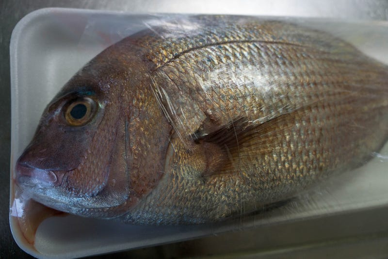
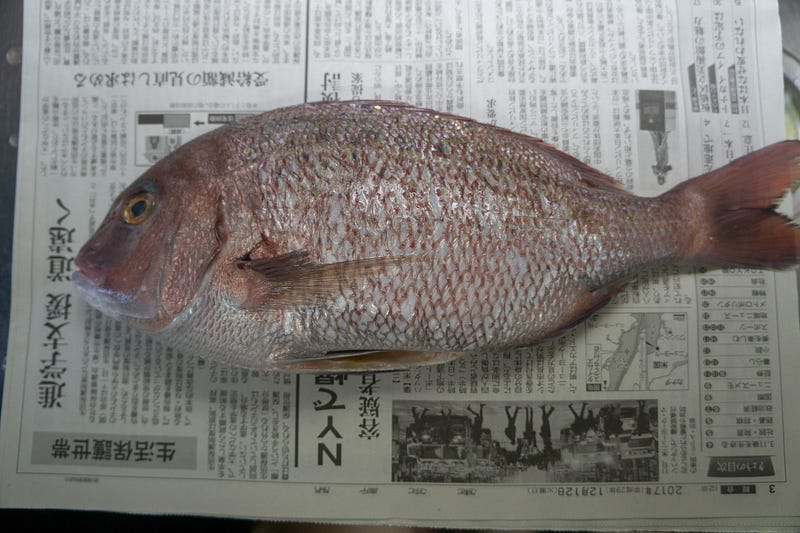
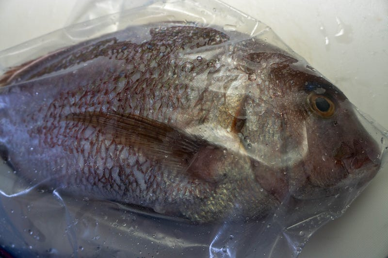
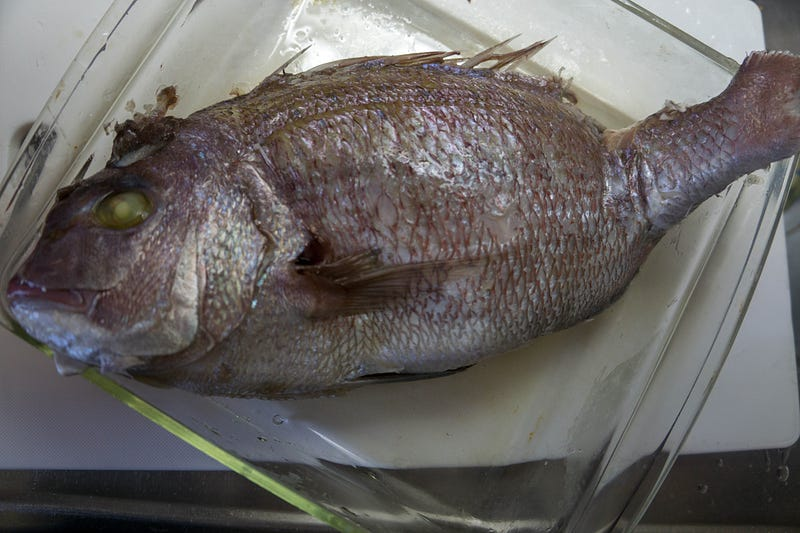
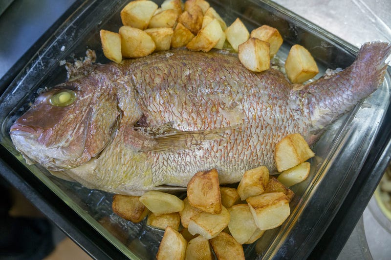

鯛を丸ごとanovaで低温調理する
鯛を丸ごとanovaで低温調理する
クリスマスに鶏肉を食べる習慣はないので（注：次のエントリでこの発言は覆されます）、クリスマスイブの昼食はanovaの低温調理は魚で攻める。しかも骨付き、丸ごとの鯛。
鯛を調理するとなると懸念事項は二つ。ひとつはサーモンですでにやっていて知っているように、低温調理後に身がもろくなっていて処理しにくいのでは、ということ。
もうひとつは骨を含む状態で調理するので、火の通り方の制御がうまくできるかどうか、ということ。
不安はあるのだが、やってみないとわからないのでここは思い切りよく試してみる。
鯛は小ぶりのを丸ごと、1500円弱。これで幼児二人分と大人三人分いきます。

鱗をざっと取り、内臓を抜く。塩を塗り塗り。

ちなみにうちでは鱗はゴムべらでとっちゃう。しっぽのほうからゴムべらを斜めに入れていくとわりとするる簡単にとれます。ヒレの部分とかは面倒なのでパス。
オンライン通販のAmazon公式サイトなら、タイガークラウン ウィズ シリコンゴムヘラ 大 1610を ホーム＆キッチンストアで、いつでもお安く。当日お急ぎ便対象商品は、当日お届け可能です。アマゾン配送商品は、通常配送無料（一部除く）。amzn.to
ジップロックのラージサイズでもギリギリ入らなかったので、しっぽをハサミで切ってなんとか収めた。小ぶりじゃなかったら無理だった。
ジップロック フリーザーバッグ Lサイズ 30枚入 ジッパー付き保存袋 冷凍・解凍用 (縦27.3cm×横26.8cm)が保存用バッグ・ポリ袋ストアでいつでもお買い得。当日お急ぎ便対象商品は、当日お届け可能です。アマゾン配送商品は、通常…amzn.to

55℃（勘）で3時間。
待ってる間にフライパンで少量の油を使ってなんちゃってフライドポテトを作っておいた。
最後の仕上げ、250℃のオーブンで20分。

ポテトもついでに一緒に温め直して、最後にフライパンに残ってた油を熱して、この後かけた。はい、できあがり。

できあがった鯛はふわふわでうまい！
ほぼ同じクォリティの鯛の丸焼きは何回も作った事あるけど、身のふわふわさはさすが低温調理。そしてanovaがあることによってオーブンの使用時間が劇的に減少してるのが良い。さらに以前は焼き目・焼き加減を良い感じにしようとすると下手をするとオーブンの中で1時間くらい、温度を調整しながらやる必要があったのだが、この方法であれば、anovaは放置しておくだけで火が通ってる。オーブンはあくまで最後の仕上げなので、適当にできてすばらしい。
またやる機会があったら、もう少し味付けを工夫してまたやりたい一品となった。
なお、パンを用意しておいて、皿の底にたまった油と出汁を吸わせて食べるとよりうまいです。